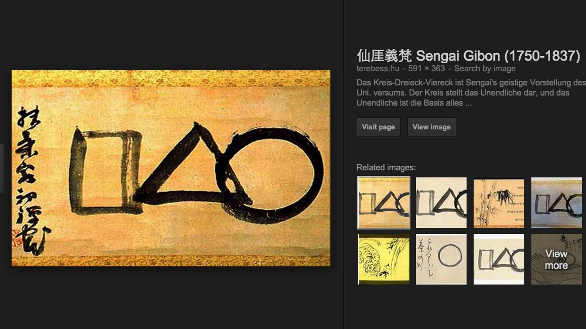
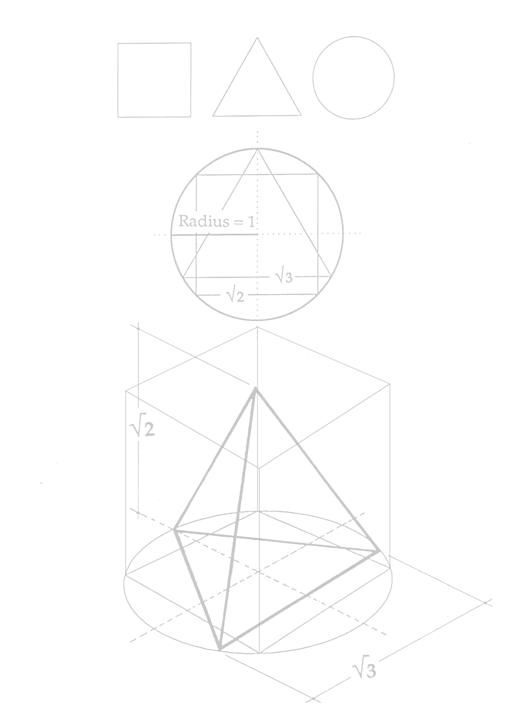

P2The Geometry
A Bridge across Dimensions
A Surprising Discovery !
Superimposing a... Square, Triangle and Circle
Constructive Geometry & The Integration of √2 and √3
The Marusankakushikaku....Is a mysterious Japanese scroll painted by the beloved master artist & monk, Sengai Gibo and is dated to around 1824. It is often referred to as Japan's First Zen Temple. The inscription on the left of the scroll is the name of Sengai's home temple of Shofuku-ji. In Zen teachings the diagram of these 3 primordial shapes can be interpreted as the underlying building blocks of the "Universe".
Both, as flat 2-dimensional shapes and 3-dimensional spatial volumes they have historically been used as symbolic and contemplative to imspire the mind. The balanced integration of the qualities associated with each symbol is believed to raise one's awareness and induce realizations of the interconnective order of the cosmos.
The SQUARE is symbolic of the earth and the world of manifestation. The TRIANGLE, as it is in the Pythagorean mystery schools, is symbolic of fire and the world of spirit. The "CIRCLE" is perhaps in a category of it's own and often referred to as the "ENSO". It is more complex and enigmatic than the others often given contrasting meanings such as 'empty' yet 'full', 'expanding' yet 'limiting', and 'eternal' yet 'cyclical'.
The "LAYING OUT OF THE CIRCLE" is often regarded as the first act of temple building. Keith Critchlow in his book "Time Stands Still", explains that the word 'temple' has its roots in the ancient Greek Temnos, which means "to cut off" or "separate". In Latin.... "templum" meaning "Space", has survived in modern languages as the word 'template', similar to the word "tempus" and confers the adjacent meaning of..."Time" (Critchlow, p22). In the earliest accounts of temple construction, found in the ancient Hindu manuscript the Manasara Shilpa Shastra, the initial act of temple construction is to establish a central point or axis around which a circle is drawn. This circumscription defines a sacred microcosm within which a transcendent relationship can be established bringing one into attunement with the correct order and harmony of the cosmos.
With respect to these 3 shapes it is intriguing to consider their combined meaning when aligned to each other and geometrically juxtaposed. Using the circle as the "limiting element" with a radius of one, or unity, we find that the edge length of the square within the circle is the square root of two (√2), and that the edge length of the triangle within the circle is the square root of three (√3). It turns out that the edge length of the square, √2, is precisely the height of a tetrahedron whose base is the same dimensions as the triangle originally circumscribed within the circle (Fig. 3).
This particular combination of shapes provides all the necessary mathematical information, to transition from 2-dimensional "Flatland", a world of symbols and shadows.... into the space of 3-dimensional reality, here represented6 in the form of a Tetrahedron, the most primary of space enclosing volumes. This transformation from 2-Dimensions to 3-Dimensions can be thought of as a connective "bridge" both abstract and physically real. It is no wonder that these shapes and their relationships have always been considered primary elements in the design and creation of sacred spaces and places. And in fact, it is believed that simply conceiving and contemplating the relationships can initiate a change in awarenes and a transformation of consciousness.
Works Cited
Addiss, Stephen. The Art of Zen
New York: Harry N. Abrams, Inc., 1989
Critchlow, Keith. Time Stands Still
New York: St. Martin's Press, 1982
Kapraff, Jay. Connections
(Published in the 1994 International Conference on Space Structures-4/5/94)

Japan's First Zen Temple

This particular combination of shapes provides all the necessary mathematical information, to transcend from 2-dimensional "Flatland", in a world of symbols and shadows.... into the space of 3-dimensional reality, namely in the form of a Tetrahedron, the most primary of space enclosing volumes. This transformation from 2-Dimensions to 3-Dimensions can be thought of as a connective "bridge" both abstract and physically real. It is no wonder that these shapes and their relationships have always been considered primary elements in the design and creation of sacred spaces and places. And in fact, the idea that simply conceiving and contemplating the relationships can initiate a change in consciousness.
To uncover such an elegant connection is to experience delight in the underlying continuity of geometry and the inherent unity of the universe. In contemplating this discovery, one may find profound enlightenment or curious amusement. But certainly, if anything, one must be inspired to look further and to examine other possibilities of connective order and integrated harmony in the transitions between dimensions. If the transcendence between 2-dimensions to 3-dimensions is a matter of the correct relationships and alignments, then perhaps transformations between other dimensions may similarly exist.